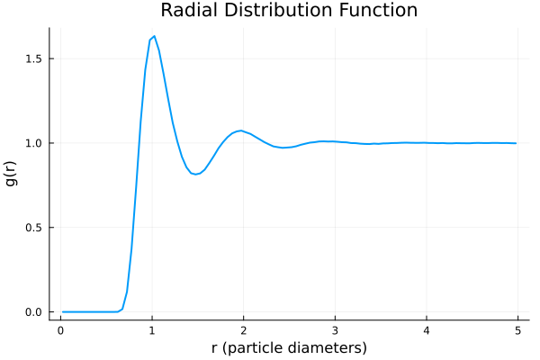

Tutorial
This tutorial provides a step-by-step guide to using SimulationAnalysis.jl for analyzing particle-based simulation data. We will cover loading a simulation, calculating the radial distribution function, and visualizing the results.
1. Setting up the Environment
Before we begin, make sure you have SimulationAnalysis.jl and a plotting library like Plots.jl installed in your Julia environment.
using Pkg
Pkg.add("https://github.com/IlianPihlajamaa/SimulationAnalysis.jl")
Pkg.add("Plots")2. Loading Simulation Data
SimulationAnalysis.jl supports various simulation formats. In this tutorial, we'll use a sample trajectory file included with the package. We will use the read_continuously_hard_sphere_simulation function to load the data into a SingleComponentSimulation object.
using SimulationAnalysis
# The test data is located in the `test/data` directory of the package.
# We can construct the path to the file like this:
filepath = joinpath(dirname(pathof(SimulationAnalysis)), "..", "test", "data", "test_trajectory.h5")
# Load the simulation data
# We specify the number of time origins to use for time correlation functions.
sim = SimulationAnalysis.read_continuously_hard_sphere_simulation(filepath; time_origins=10)The sim object now holds all the simulation data, including particle positions, box dimensions, and time steps. If you have access to data in a different format, you need to construct a Simulation object manually.
3. Calculating the Radial Distribution Function (g(r))
The radial distribution function, g(r), is a key quantity that describes the structure of a system. It measures the probability of finding a particle at a distance r from another particle.
Let's calculate g(r) for our simulation. We need to specify the number of bins and the maximum radius for the calculation.
# Set the parameters for the g(r) calculation
Nbins = 100
rmax = 5.0
# Calculate the radial distribution function
bin_centres, gr = find_radial_distribution_function(sim, Nbins, rmax)The find_radial_distribution_function function returns two arrays: bin_centres, which contains the center of each radial bin, and gr, which contains the corresponding g(r) values.
4. Visualizing the Results
Let's use Plots.jl to visualize the result.
using Plots
# Create a plot of the radial distribution function
plot(bin_centres, gr,
xlabel="r (particle diameters)",
ylabel="g(r)",
title="Radial Distribution Function",
legend=false,
lw=2
)
This will generate a plot showing the characteristic peaks of the g(r) for a liquid-like structure. The first peak corresponds to the nearest neighbors, the second to the next-nearest neighbors, and so on.
This tutorial has demonstrated a basic workflow for analyzing simulation data with SimulationAnalysis.jl. You can explore the Examples page for other analysis techniques.